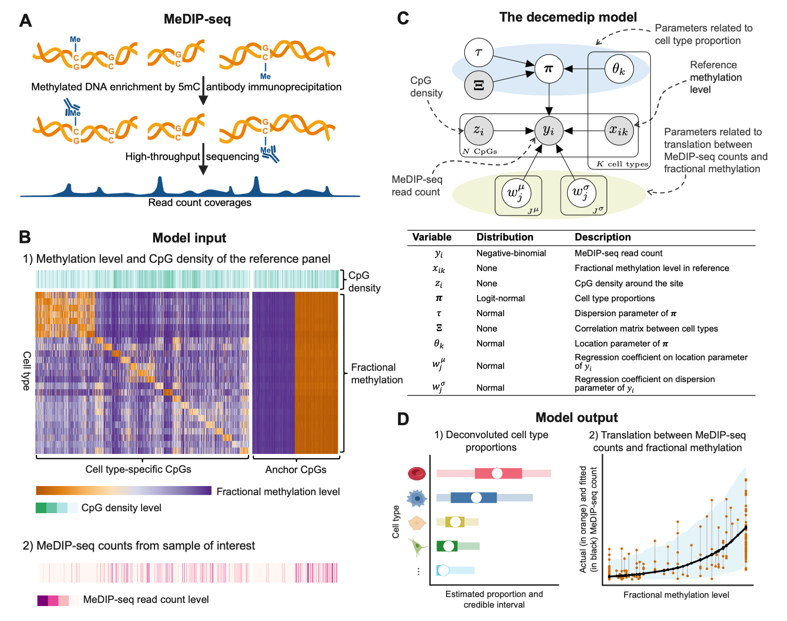

The R package decemedip is a novel computational paradigm developed for inferring the relative abundances of cell types and tissues from tissue bulk or circulating cell-free DNA (cfDNA) measure by methylated DNA immunoprecipitation sequencing (MeDIP-Seq). This paradigm allows using reference data from other technologies such as microarray or WGBS.

Installation
You can install the development version of decemedip in R from GitHub with:
# install.packages("devtools")
devtools::install_github("nshen7/decemedip")Usage
An online vignette on the decemedip package can be found at https://rpubs.com/nshen7/how-to-use-decemedip.
How to get help for decemedip
If you have questions or suggestions regarding the decemedip package, please feel free raise an issue in this GitHub page or alternatively email the author, Ning, at ning.shen.wk@gmail.com.